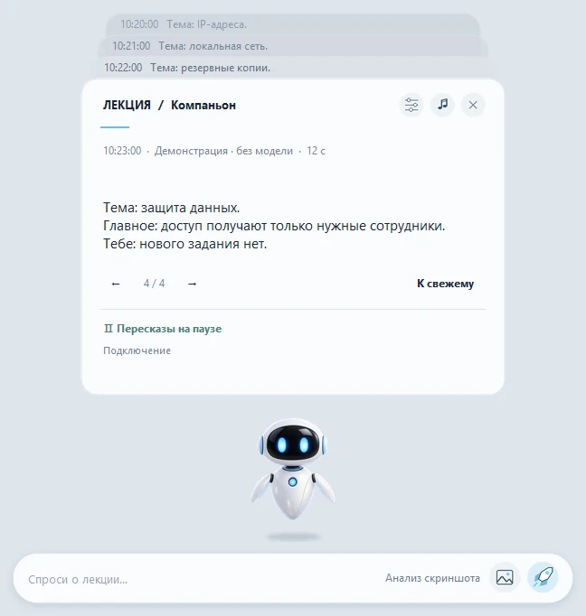

Lecture Companion
- Задача
- Я не успевал за словами преподавателя: пока вспоминал немецкое слово и искал его, терял смысл сказанного. Робот помогает мне оставаться в контексте лекции и разбирать её, ничего не отправляя в интернет.
- Что сделал я
- Идея моя, как и у PeakMP3; дизайн согласовывался со мной, код написал ИИ, на мне приёмка, тесты и остальное.
- Как проверено
- В GitHub Actions на Windows запускаются проверки без моделей (verify.py); к выпуску приложены контрольные суммы SHA-256, есть демо без Teams с искусственными данными. На втором чистом ПК программа пока не проверялась.